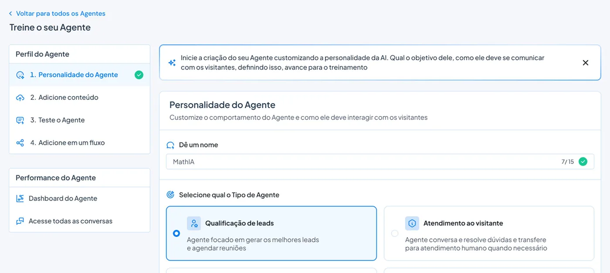
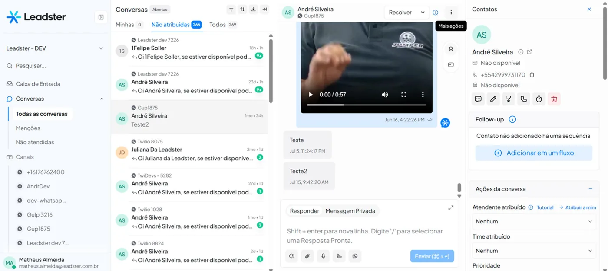
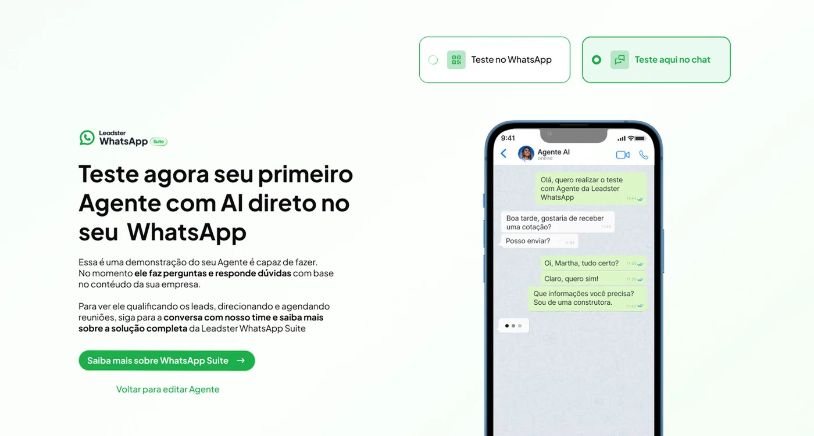
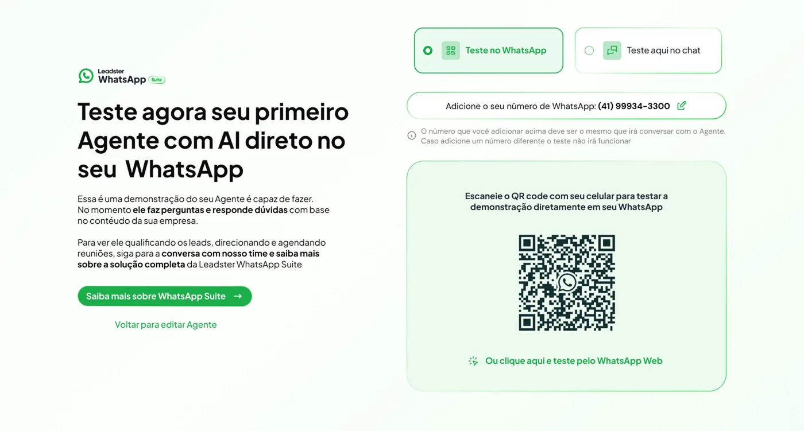

WhatsApp Suite — A nova era da Leadster
Agentes de IA que atuam dentro do seu número. Além de uma plataforma de atendimento humano.




Conheça o WhatsApp Suite
Endereço externo do produto a confirmar pelo titular (B3).01 / Problema
Expandir o produto da Leadster e aumentar a receita da empresa
O ano de 2024 e até o momento de 2025, a Leadster apresentava o maior número de churn de sua história, que crescia mês a mês. Em um produto focado para websites, era claro o desgaste do mercado com a solução de chatbot para sites: era necessária uma nova estratégia.
Havia perda de receita recorrente, com clientes saindo para empresas com softwares mais completos ou desenvolvendo soluções próprias com a ascensão da Inteligência Artificial.
02 / Meu papel
Entender o que o mercado queria
O WhatsApp é a ferramenta mais usada pelo brasileiro; o serviço de mensageria virou uma ferramenta poderosa para gerar leads e conquistar novas vendas. Esse insight foi coletado e ouvido em muitas conversas com clientes, ex-clientes, empresários, profissionais e outros CEOs.
Olhando para nossa base, identificamos um alto uso da função de redirecionar leads do site para o WhatsApp: 75% da nossa base (1.000 clientes) leva os leads para a mensageria.
Durante o processo conduzido de discovery, foi apontada a necessidade de aumentar o rapport com os leads pelo WhatsApp, agilidade no atendimento, tratar apenas os leads qualificados, aumentar reuniões, diminuir respostas repetitivas e diminuir o ciclo de vendas, além de um canal de comunicação constante.
Com os vários insights de clientes e das equipes da empresa, foram levantadas hipóteses e como elas se casavam com as necessidades de negócio. Foi priorizada de forma unânime a urgência da construção de uma solução para WhatsApp. O mercado mostrou que a IA Generativa poderia mudar o rumo do atendimento das empresas e aliviar o trabalho da equipe de atendimento.
Validada a hipótese, construí jornadas diversas de uso para entrada dos leads (onboard e ativação), editor de agente de IA e editor de fluxo, pois, para uma IA funcionar bem, é necessário treiná-la bem. Para a construção da plataforma de atendimento, foi decidido usar uma plataforma open source, agilizando o desenvolvimento e economizando recursos.
Tudo foi unido, testado internamente e levado a potenciais clientes. Coube a mim sintetizar todo o aprendizado, melhorar o que era necessário, gerenciar backlog, priorizar atividades e testar o que ia sendo desenvolvido.
Quando lançado, era de minha responsabilidade acompanhar o uso, as métricas de envio de mensagens, monitorar bugs e gerenciar novas melhorias.
03 / Processo
Um produto novo em poucos meses
Descoberta
Por que o número de churn aumentava? Explorar as motivações, entender o que o mercado pedia, o que não estava sendo oferecido e onde poderíamos atacar. Visto isso, não tínhamos nada referente a WhatsApp, o principal canal de comunicação do Brasil.
Definição
Criar uma solução para WhatsApp para reduzir o primeiro ponto de contato do lead com a empresa, agilizar o atendimento, diminuir o trabalho repetitivo, otimizar conversas, levar leads qualificados para atendimento humano e deixar a IA com o trabalho pesado. Isso sem período de teste gratuito, com venda direta e planos diversificados.
Design
Gerar jornada de uso, fluxo de ativação, telas de edição de agente, conteúdo, testes, fluxo de conversação e área de analytics. Hand-off grande de vários outros recursos.
Validação
Testes com usuários, testes internos e em QA. Gerenciamento de backlog, acompanhamento técnico, de métricas e geração de levantadas de mão.
04 / O que aprendemos
Decisões-chaves e Outcomes
Decisões
- Solução para WhatsApp e plataforma de atendimento.
- Focar em criar uma IA conversacional e assertiva.
- Sem período de teste gratuito; venda direta com planos.
- Focar em levantadas de mão durante a jornada de uso.
Outcomes
A IA precisa ser confiável: qualquer erro é crítico. A jornada precisa ser muito clara e simples. Quando envolve WhatsApp, é necessário pegar na mão do cliente e andar com ele. Suporte rápido e eficiente é diferencial, e a plataforma precisa ser estável e segura. Treinar o agente é a parte mais fácil; difícil é colocá-lo no ar, pois depende de muito teste e confiança.
05 / Resultados
Em menos de um ano é o nosso principal produto
- Em menos de um ano conquistamos 60 clientes, com aumento de 20% no MRR. Todos os esforços da empresa hoje são concentrados no produto de WhatsApp.
- Mais de 1.000.000 de mensagens enviadas pela IA dos nossos clientes.
- CSAT beirando os 100%.
- Valor total em vendas superando R$ 300.000,00.
- Mais de 200.000 templates aprovados da Meta enviados.